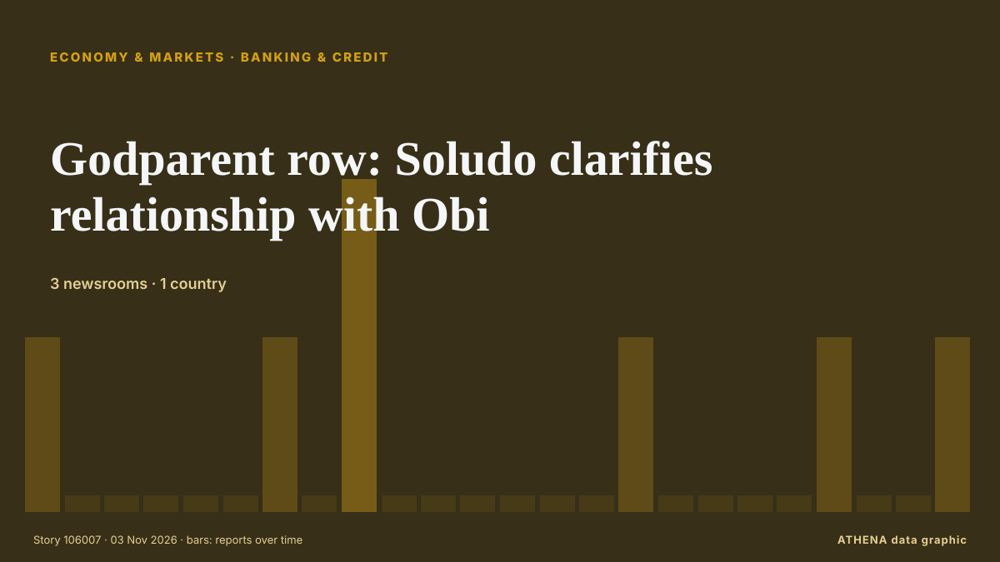

Banken und Kredit
| 22. Okt. | 0 |
|---|---|
| 23. Okt. | 0 |
| 24. Okt. | 0 |
| 25. Okt. | 0 |
| 26. Okt. | 0 |
| 27. Okt. | 0 |
| 28. Okt. | 1 |
| 29. Okt. | 0 |
| 30. Okt. | 1 |
| 31. Okt. | 4 |
| 1. Nov. | 4 |
| 2. Nov. | 6 |
| 3. Nov. | 5 |
| 4. Nov. | 0 |
Schlagzeilen werden auf Englisch angezeigt, wie veröffentlicht.

Godparent row: Soludo clarifies relationship with Obi
Mr Soludo has been in a prolonged face-off with Peter Obi and predicted in 2022 that Mr Obi would not win the 2023 presidential election, which was eventually won by President Bola Tinubu. von Premium Times
Lagos to host All Nigeria Rotary Peace Summit this November
The organisers said they translate discussions into concrete actions under the sub-theme “From Dialogue to Action: Forging a Sustainable Peace Legacy in Nigeria”. von Premium Times
Westpac flags deepest housing downturn in nearly two decades
AUSTRALIA: Australian lender Westpac on Monday warned of a housing market downturn steeper than any seen in nearly two decades and reported a twofold jump in credit impairment charges, while… von New Straits Times
Westpac NZ’s profit slips as lending grows
The bank's net interest margin fell to 2.23%, from 2.32%. von BusinessDesk
New Zealand's central bank registers Revolut as country's 27th bank
Regulatory approval means Revolut Bank NZ will be the nation's first digital bank. von BusinessDesk
Owner of Serbia's Delicenced ALTA Banka Gets Arrested
The Executive Board of the National Bank of Serbia has officially revoked the operating licence of Alta Banka a.d. von N1 Serbia (English)
FG introduces USSD code for loans covering food, solar, others
The Federal Government has launched a new USSD-based credit service, SPARK, designed to help Nigerians access loans and build formal credit histories using basic mobile phones. von Vanguard
Cracks In Turkey-Azerbaijan Ties: Israel And Aliyev’s Absence
Behind the specific disagreements, a broader geopolitical issue may be at play, as Ankara and Baku diverge on Iran, Israel and Armenia. von to vima
Jordan's king says 'no security or stability' in region without Palestinian homelan
Jordan’s King Abdullah II on Monday said there would be no security in the Middle East region until the Palestinians’ right to a homeland is fulfilled. von Hespress English
Egypt signs $1bn World Bank financing agreement under second phase of reform programme
Egypt has signed a $1bn financing agreement with the World Bank under the second phase of its Development Policy Financing (DPF) programme to support economic reforms, strengthen resilience to… von Daily News Egypt
Nigeria: Adesina, Sanusi, Otti, Others to Lead African Prosperity Talks in Abuja
[This Day] Abuja -- Former President of the African Development Bank (AfDB), Dr Akinwumi Adesina; Emir of Kano, Muhammadu Sanusi II; and Abia State Governor, Alex Otti, are among prominent African… von AllAfrica
Israeli forces fire tear gas at Palestinian students, teachers in West Bank as occupiers block roads
Israeli army, occupiers carry out 3,133 attacks last month in 52.8% increase from previous month, commission says. von Express Tribune
African lenders formally establish $5 billion energy bank
The African Export-Import Bank and the African Petroleum Producers' Organisation have formally established the Africa Energy Bank, according to a statement from Afreximbank on Saturday. von MyJoyOnline
Israeli army arrests 5 Palestinians in West Bank raids
Israeli forces raid homes of Palestinians in Nablus, Qalandiya refugee camp, according to Palestinian Prisoners’ Media Office. von Anadolu Agency (English)
A retired student-loan borrower is fighting for public service debt relief. Now he's named in a lawsuit against Trump.
A student-loan borrower was told he earned Public Service Loan Forgiveness, only to have his payments reinstated. von Business Insider